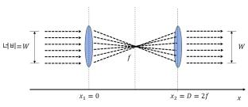
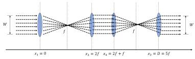
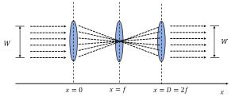
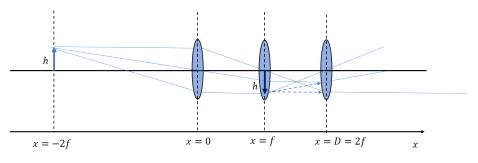

해설 2
문항 (1)은 두 렌즈가 초점을 중심으로 대칭을 이루어야 같은 폭의 빛이 나갈 수 있음을 구하는 문항이다. 문항 (2)는 가운데 있는 두 렌즈 사이에서 빛의 진행이 평행광선이 되어야 대칭을 이루어 마지막 렌즈를 통과한 후 같은 폭의 빛이 나갈 수 있음을 구하는 문항이다. 문항 (3)은 하나의 렌즈만 추가할 경우 렌즈 1, 2의 초점 위치에 렌즈 3이 있어야 빛의 진행에 영향을 주지 않고 같은 폭의 빛이 나갈 수 있음을 구하는 문항이다. 문항 (4)는 물체의 빛이 렌즈를 통과한 후 만들어 낸 상이 다음 렌즈의 물체 역할을 하여 상을 만들어 낼 수 있음을 이용하여 최종 상의 위치와 배율을 구하는 문항이다.
예시 답안
(1) \(D = 2f\) 이다.

(2) \(x_3 = 2f\)이며, \(D = 5f\)이다.

(3) \(x_3 = f\)이며, \(D = 2f\)가 된다.

(4) \(L_2\)의 오른편에서 보이는 상의 위치는 아래의 그림과 같이 \(L_1\), \(L_2\) 사이 \(x = f\)에 존재하며, 형성된 상은 허상이며 도립이다. 배율은 1이다.

부분점수기준
- (위치 \(x = f\), 허상, 도립, 배율 1) 모두 맞게 답한 경우 (2점)
- (위치 \(x = f\), 허상, 도립, 배율 1) 중 세 가지 또는 두 가지를 맞게 답한 경우 (1점)
- (위치 \(x = f\), 허상, 도립, 배율 1) 중 한 가지 이하로 맞게 답한 경우 (0점)